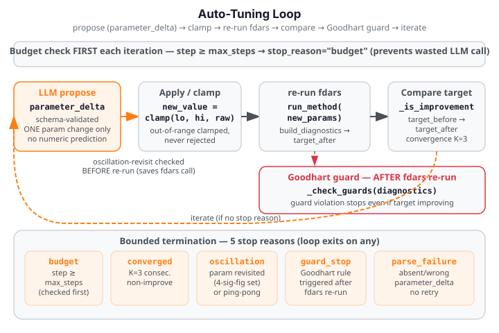

Closed-Loop Auto-Tuning¶
Auto-tuning closes the loop between the advisor's diagnostics and fdars parameter selection: an LLM proposes one parameter change per iteration, fdars re-runs with the new value, and the loop continues until a bounded termination condition fires. The LLM reasons about diagnostics — it never touches the numeric computation path directly.

Method¶
auto_tune orchestrates a bounded propose→apply→clamp→re-run→compare loop. The key
invariants are:
Bounded termination. The loop terminates on exactly five conditions, checked in strict precedence order each iteration:
| Stop reason | Condition |
|---|---|
"budget" |
step >= max_steps (hard cap; max 20) |
"parse_failure" |
LLM proposal missing, wrong param name, or non-numeric new_value |
"oscillation" |
Proposed param value already visited (before the fdars re-run, saving a wasted call) |
"guard_stop" |
A Goodhart-guard metric threshold exceeded (after the fdars re-run) |
"converged" |
No improvement for no_improve_window consecutive steps |
Schema-validated numeric boundary (grounding invariant). The LLM's only numeric
contribution to the loop is Recommendation.parameter_delta.new_value — a schema-validated
field in the parameter_proposal task family. This value is:
- Read from the schema-validated
parameter_deltafield — never parsed from prose. - Clamped to the declared parameter range:
max(lo, min(hi, raw_value)). Out-of-range proposals are always clamped, never rejected. - Int-cast when the parameter type is
int. - The single number from the LLM that ever enters the fdars numeric path.
Goodhart guard. After each fdars re-run, deterministic Python guard rules check whether
the tuning has caused a secondary metric to degrade beyond a safe threshold. If a guard
fires, the loop exits with stop_reason="guard_stop" — even when the primary target metric
is still improving. This prevents Goodhart's Law scenarios where optimising one metric
breaks another.
Offline and injectable. For docs, CI, and offline use the _run_method and
_build_diagnostics seams replace the real fdars calls. provider accepts any object
satisfying the Provider protocol, including an offline FakeProvider. No API key
or network connection is needed in offline mode.
Tuneable methods. The following fdars method families are tuneable:
| Method | Tuned parameter | Range | Target metric |
|---|---|---|---|
"smoothing" |
n_basis (int) |
4–60 | optimal_gcv (lower) |
"basis" |
lambda_ (float) |
1e-6–1e4 | optimal_edf (lower) |
"fpca" |
n_comp (int) |
1–20 | cumulative_variance_explained (higher) |
"clustering" |
k (int) |
2–15 | mean_amplitude_separation (higher) |
"alignment" and "depth" are not tuneable and raise ValueError.
Worked example¶
The fence below runs a two-step auto-tuning loop offline using injectable seams — no
network call and no API key needed. A FakeProvider returns a valid
schema-validated proposal; _run_method and _build_diagnostics replace the real fdars
calls with synthetic results.
from fdars.advisor import auto_tune
from fdars.advisor._schema import Advice, Recommendation, TuneProposal
# FakeProvider: satisfies the Provider protocol without any network call
class FakeProvider:
name = "fake"
model = "fake-model"
supports_native_structured_output = True
def __init__(self, response_fn):
self._response_fn = response_fn
def complete_structured(self, model_cls, messages, system):
return self._response_fn(model_cls, messages, system)
def _fake_response(model_cls, messages, system):
"""Propose n_basis=20 (within [4, 60]) — purely qualitative rationale."""
return Advice(
interpretation="GCV is currently above target; a larger basis may fit better.",
recommendations=[
Recommendation(
action="increase n_basis",
kind="parameter",
rationale="the current basis count appears insufficient for the signal complexity",
expected_effect="should improve GCV",
evidence=["the diagnostic value indicates adjustment is warranted"],
parameter_delta=TuneProposal(
param="n_basis",
new_value=20.0,
rationale="increase basis count to capture more variation",
),
)
],
caveats=[],
)
call_count = [0]
gcv_values = [0.15, 0.10] # step 0 → 0.15, step 1 → 0.10
def _fake_run_method(dataset_id, method, **params):
return {"synthetic": True, "method": method, "params": params}
def _fake_build_diagnostics(result, method, argvals=None, **kwargs):
idx = min(call_count[0], len(gcv_values) - 1)
call_count[0] += 1
return {"optimal_gcv": gcv_values[idx], "optimal_edf": 10.0 + call_count[0]}
tune_result = auto_tune(
"synthetic_dataset",
"smoothing",
max_steps=2,
provider=FakeProvider(_fake_response),
_run_method=_fake_run_method,
_build_diagnostics=_fake_build_diagnostics,
n_basis=15, # initial value
)
print(f"stop_reason: {tune_result.trace.stop_reason}")
print(f"improved: {tune_result.improved}")
print(f"initial_gcv: {tune_result.initial_target_value:.4f}")
print(f"final_gcv: {tune_result.final_target_value:.4f}")
print(f"steps taken: {len(tune_result.trace.steps)}")
print("FDARS_FENCE_OK")
Functions¶
auto_tune¶
auto_tune(dataset_id, method, *, target_metric=None, max_steps=10,
domain_context="", model="claude-opus-4-8", provider=None,
guard=True, _run_method=None, _build_diagnostics=None,
**initial_params) -> TuneResult
Run the closed-loop tuning orchestrator with an LLM-backed proposal function.
Parameters
| Parameter | Type | Default | Description |
|---|---|---|---|
dataset_id |
str |
— | Opaque dataset handle registered in the MCP registry. Any string when using test seams |
method |
str |
— | The fdars method to tune ("smoothing", "basis", "fpca", "clustering") |
target_metric |
str or None |
None |
Diagnostic metric key to optimise. When None, the per-method default from _PARAM_REGISTRY is used |
max_steps |
int |
10 |
Hard step cap; must be >= 1; capped at 20 |
domain_context |
str |
"" |
Free-text domain description passed to advise() for each proposal |
model |
str |
"claude-opus-4-8" |
LLM model identifier |
provider |
str or Provider or None |
None |
LLM provider. None uses Anthropic default. Pass a FakeProvider for offline testing |
guard |
bool |
True |
When True, Goodhart guard thresholds from _PARAM_REGISTRY are applied |
_run_method |
callable or None |
None |
Test seam: replaces the real fdars method call (offline testing) |
_build_diagnostics |
callable or None |
None |
Test seam: replaces the real build_diagnostics call |
**initial_params |
Starting parameter value(s). When omitted the spec default is used (e.g. n_basis=15 for smoothing) |
Returns
TuneResult — complete result including:
| Field | Type | Description |
|---|---|---|
trace |
TuningTrace |
Full loop trace with all steps, final diagnostics, and stop_reason |
improved |
bool |
Whether the final target value is strictly better than the initial |
initial_target_value |
float |
Target metric value at loop start |
final_target_value |
float |
Target metric value at loop end |
improvement_pct |
float or None |
Sign-aware improvement percentage (positive = better) |
TuningTrace fields:
| Field | Type | Description |
|---|---|---|
steps |
list[TuningStep] |
Per-iteration step records |
final_diagnostics |
dict |
Diagnostics from the last fdars run |
stop_reason |
str |
One of "budget", "parse_failure", "oscillation", "guard_stop", "converged" |
Each TuningStep:
| Field | Type | Description |
|---|---|---|
param_before |
dict |
Parameter values before the proposal |
param_after |
dict |
Parameter values after clamping and applying the proposal |
target_before |
float |
Target metric before re-run |
target_after |
float |
Target metric after re-run |
accepted |
bool |
Whether the new value is retained as a genuine improvement |
stop_reason |
str or None |
Non-None on the final step that triggered termination |
guard_violations |
list[str] |
Guard rule violations that fired on this step |
Raises
ValueError—methodis not tuneable (e.g."alignment","depth"),max_steps < 1, ormethodnot in_PARAM_REGISTRY.
Caveats¶
The LLM proposes; fdars decides. The LLM's only numeric contribution is
parameter_delta.new_value. All numeric computation (re-running fdars, extracting the
target metric, checking guard thresholds) is done by deterministic Python. The LLM cannot
override the guard or the termination logic.
Out-of-range proposals are clamped, not rejected. An LLM proposal of n_basis=100
with a declared range [4, 60] is silently clamped to 60. The clamped value is recorded
in TuningStep.param_after. This avoids a parse_failure exit on a numerically reasonable
but range-violating proposal.
Oscillation check saves fdars calls. When a proposed parameter value has already been
visited in a previous step (within 4 significant figures for floats), the loop exits with
stop_reason="oscillation" before running fdars. This avoids a wasted re-run on a
known repeat configuration.
Goodhart guard fires after the fdars re-run. The guard metrics (e.g. phase_leakage_indicator
for FPCA, optimal_edf relative to n_obs for smoothing) are checked on the diagnostics
produced by the re-run — not on the proposed parameters. A guard that fires signals that
optimising the target metric has caused a secondary measure to degrade beyond a safe
threshold.
No LLM retry on parse failure. When a proposal is missing, has the wrong parameter
name, or contains a non-numeric new_value, the loop exits with stop_reason="parse_failure"
immediately — the LLM is called exactly once per step.
provider is required for offline use. Pass an injectable provider=FakeProvider(...) to
use auto_tune without a network call or API key. The FakeProvider must satisfy the
Provider protocol: name (str), model (str), supports_native_structured_output (bool),
and complete_structured(model_cls, messages, system) method.